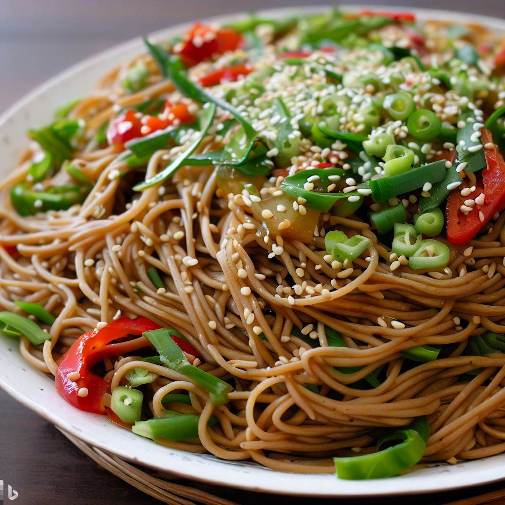

As Good as it Gets Sesame Noodle Salad

A simple sesame noodle salad made with ingredients commonly found in most supermarkets.
Ingredients
- 1 pond whole wheat spaghetti
- 1/2 cup reduced sodium soy sauce
- 2 Tbsp. sesame oil
- 2 Tbsp. canola oil
- 2 Tbsp. rice vinegar
- 1 1/2 tsp. crushed red pepper flakes
- 1 bunch green onions sliced (1/4 cup reserved)
- 4 cups fresh snow peas sliced thinly on bias
- 1 medium red pepper thinly sliced
- 1/4 cup toasted sesame seeds
- 1/4 cup cilantro chopped
Method
- Cook spaghetti according to package directions, drain and set aside
- Whisk together the soy sauce, sesame oil, canola oil, rice vinegar, and crushed red pepper flakes
- Mix the green onions, snow peas, red pepper,sesame seeds, and cilantro
- To a large bowl add the vegetable mixture, sauce, and spaghetti, toss to combine
- Serve warm or refrigerate for at least two hours, top with reserved green onions
Notes
- You can substitute lime juice for the rice vinegar
- If you wish you may omit the cilantro.